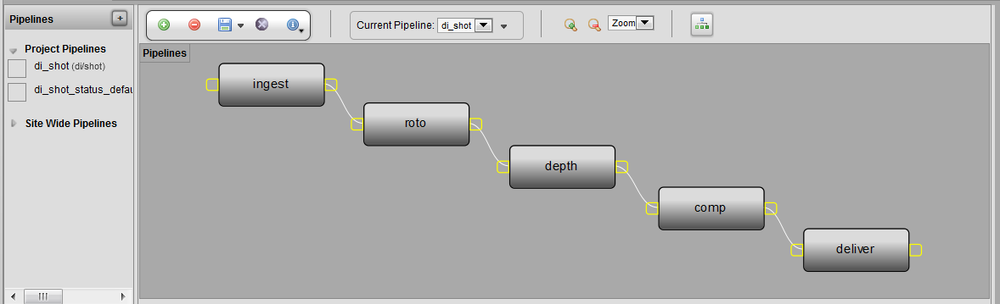

The pipeline defines all of the processes and deliverables required in the creation of an item, and is the central entity that ties the whole production together. In simple terms, a pipeline is simply a definition of workflow processes.
In TACTIC, the pipeline workflow is used to lay out the steps which a particular Searchable Type (sType) needs to follow as it flows through its processes. Searchable Objects (sObjects) in TACTIC are by nature like static containers or place holders that contain everything that relates to them. When this content needs to be organized, managed and produced as a part of a workflow, this is where a pipeline comes into play. A Pipeline allows for this item "container" to be placed on a digital conveyor belt where it will stop at each process and will be filled with Tasks, Notes, Snapshots (checked in files) and more. On top of this, the contents are tagged with this process allowing for a separate history representing each stop on the conveyor belt.

Workflow Concepts
At the very beginning, a clear diagram should be defined of the processes, their relationships to each other and the deliverables between each of the processes.
Each sType can have its own pipeline(s), so you create different pipelines for different sTypes.
The best approach to building a pipeline is to start simple, processes can always be added later. Overall, the general concept for defining the processes in a pipeline, is to break down each place where separate file versioning, tasks and notes will need to be generated and tracked
Simply put: you have a series of processes, named in any way you wish. Each process is often represented by a task assigned to a user which needs to be worked on. The completion of a process occurs when this task complete (often indicated by setting it to a final status ie approved, complete etc). While this task is in progress, files will be checked in and notes will be tracked as the process is worked on.
Status
Each process also contains a set of possible "statuses" which which typically a used by the tasks. For example the "model" process can have a possible status of (Waiting, Ready, In Progress, Revise, Review, Approved, Client approved). Each status helps track the current state of the process and are often the spawning point of automatically setting downstream and upstream process status, sending automated notifications and using the python triggers, etc.
Subcontext (advanced)
At times there may need to be a further breakdown within a process, this can be achieved through using a subcontext. Sub-contexts are used for departments to check-in and track work and progress internally without other departments needing to interact withe the content. For example, in the case of a VFX process in a shot pipeline, someone checking in files may be able to add extra specification (subcontext) such as VFX/dynamics, VFX/water, or VFX/smoke. Another situation is where multiple variation of something need to be checked in. For example you may need a "red" and a "blue" design so the subcontexts for a design checkin would be design/red and desing/blue.